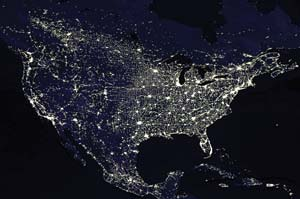
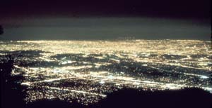

Everyone knows reducing energy consumption inside our homes saves money. Most people also know that burning less fossil fuel helps mitigate global warming. But not as many people realize that we can also save money and help the environment by making simple changes to our outdoor lighting.
Light pollution refers to excessive or misdirected outdoor lighting, much of which goes uselessly up into the sky. This hazy blanket of light in the atmosphere prevents us from enjoying the full beauty of the stars. The International Dark-Sky Association (IDA), a nonprofit group dedicated to reducing light pollution, conservatively estimates inefficient and poorly designed outdoor lighting wastes at least a billion dollars annually in the United States. That wasted energy requires the burning of about 23 million barrels of oil or 6 million tons of coal.
You can spot bad lighting by the halo surrounding it. Well-designed outdoor lighting does not produce this glow, and it shouldn’t direct light where it isn’t needed. To make sure light falls correctly (usually at the ground), look for adjustable fixtures with shielded sides and tops. You also can retrofit the fixtures you’ve already got by adding inexpensive shields.
Opt for efficient options, such as light-emitting diodes (LEDs), sodium vapor lights and compact fluorescent light bulbs (CFLs). Use the minimum wattage for your needs, and add motion sensors to lights when feasible. The IDA maintains a list of appropriate fixtures and information about retrofitting existing lights at www.darksky.org.
Interest in decreasing light pollution is growing. National Dark-Sky Week (www.ndsw.org) was launched four years ago by Virginia high school student Jennifer Barlow. In order to reduce light pollution temporarily, thousands of people keep unnecessary outdoor lights off during the week of the new moon in April. This year’s Dark-Sky Week is April 17 to 24. Meanwhile, GLOBE at Night is a new worldwide project in which volunteers measure light pollution by counting stars in the constellation Orion. Last March, more than 18,000 people from 96 countries participated. Their observations help identify parts of the world that are especially wasteful with light. This year’s GLOBE at Night will be held March 8 to 21. To find out how you can participate, visit www.globe.gov/GaN.
|
 NASA/GODDARD SPACE FLIGHT CENTER The Earth from space. The human footprint on Earth is evident, even from space. Simple steps can reduce the light pollution that prevents us from fully enjoying the night sky. |
 INTERNATIONAL DARK-SKY ASSOCIATION Los Angeles. The human footprint on Earth is evident, even from space. Simple steps can reduce the light pollution that prevents us from fully enjoying the night sky. |
|